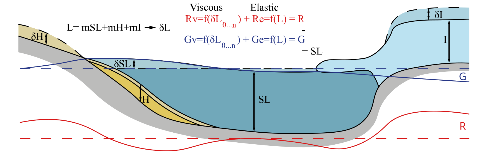

Mathematical Theory
Most of our code is based on the mathematic and computational theory from [Dalca et al., 2013].
The SLE
The Relative sea level (\(\Delta SL\)) variations is the result of the interaction between the vertical mouvement of geoïd, \(\Delta Gtot\) (surface of the ocean) and the vertical mouvement of the ground, \(\Delta Rtot\) (called subsidence). We can then express the equation as :
The geoïd variation include both, variation of the geoïd \(\Delta\mathcal{G}tot\) surface and variation of the ocean volume. The variation of the ocean volume following a conservation of the mass, denoted \(\frac{\Delta \Phi}{g}\).
Both geoïd and ground variations (\(\Delta Xtot\)) can be decomposed into variations (\(\Delta X\)) due to mass redistribution and varaitions induced by earth rotation (\(\Delta X^T\)).
The resulting SLE is :
This equation shows that variations in relative sea level are the result of the interaction of geoid and ground variations induced by mass variations, plus the effect of the earth’s rotation, plus respectively the redistribution of water masses between ice, sediment and ocean and variations in the earth’s surface due to sedimentary input and ice.
Conservation of mass
The term \(\frac{\Delta \Phi}{g}\) follows a conservation of mass equation based on the variation of ice (\(\Delta I\)) and ocean volume (\(\Delta S\)).
\(\Delta S\) include three variations, the variations of the sea level, the variation of ocean volume due to ice ocean interaction and the variation of the ocean surface. These three variations are expressed as follows :
Where \(T_0\) is the initial ocean volume and \(C\) is the ocean function (1 in the ocean and 0 on the continent) :
Injecting this expression to the conservation of mass we obtain :
with \(\mathcal{A} \equiv \iint_{\Omega} C \mathrm{~d} \Omega\)
Behind the ocean function the variation of topography include ice and sediment thickness. The conservation term \(\frac{\Delta \Phi}{g}\) include then the replacement of ocean by sediment.
Development of \(\Delta G\) and \(\Delta R\)
To determine both \(\Delta G\) and \(\Delta R\), denoted from here \(\Delta \chi\), [Peltier, 1974] and [Mitrovica and Peltier, 1989] introduce the Green’s functions that describe the response of a radial symetric self gravitating sphere. The relation include a spatial and temporal convolution between the Green functions and the Load \(\Delta M\).
Where \(\gamma\) is \(cos(\gamma) = cos(\theta)cos(\theta^{\prime}) + sin(\theta)sin(\theta^{\prime})cos(\psi-\psi^{\prime})\). GF here denote the Green function.
Case of a non-rotational Earth
The GFs follows the love numbers theory [Love, 1892]. Our code differs from the work of [Dalca et al., 2013] by using decay love numbers where the normal mode of love numbers was used (see section xx for details about the love numbers used in this code). We use the h and k love numbers and derive for both the elastic (\(x_{\ell}^E\)) and viscous (decay, \(x_{\ell}^V(t)\)) part.
Here we are working on two GF, for the geoïd (\(\phi(\gamma,t)\)) and the ground (\(\Gamma(\gamma,t)\)) vertical motion.
Where \(a\) is the Earth radius, \(M_e\) the Earth mass, \(g\) the gravitational constant of earth and \(\delta(t)\) is the Dirac function. For the non-rotational part, in the convolution, GFs are applied to the Load (\(\Delta L (\Theta,\Psi,t)\)) a pure variation of masses.
Case of a rotational Earth
The effect of rotation on sea level is expressed by the perturbation of Earth’s rotational vector solved by using tidal love numbers \(k^T\) and \(h^T\) [Milne and Mitrovica, 1998] in the GFs, for both elastic \(x_{\ell}^{T,E}\) and viscous \(x_{\ell}^{T,V}(t)\).
Where
For the rotational Earth convolution a rotational potential is defined as \(\Lambda(\Theta,\Psi,t_j)\). The equations behind are described in [Milne and Mitrovica, 1998] and are not developed here.
Resolution of temporal and spatial convolution
Spatial convolution
The spatial convolution is resolved using the spherical harmonic transformation. For a function \(\chi(\Theta,\Psi,t)\), we can define spherical harmonics coefficients \(\chi_{lm}(t)\), where \(l\) is the degree and \(m\) is the order of the associated Legendre polynomial (\(Y_{lm}(\Theta,\Psi)\)) :
with \(\sum_{lm}=\sum_{l=0}^{\infty} \sum_{m=-l}^{m=l}\), for a degree l there is 2l+1 order.
In the spectral domain the convolution can be solved :
With \(T_l = \frac{4\pi a^2}{2l+1}\)
Temporal convolution
The resolution of temporal convolution is performed by a Heaviside distribution of the load \(\mathcal{H} (t)\).
\[\begin{split}\mathcal{H} (t) = \left\{ \begin{array}{ll} 1 & \mbox{si t>0} \\ \varnothing & \mbox{si t=0} \\ 0 & \mbox{si t<0} \\ \end{array} \right.\end{split}\]
The Heavyside distributed load is :
Resolution of the convolutions
Applying the temporal convolution resolution :
and :
with IGF the time integration of the GF.
We have then :
By application of the spatial convolution solution :
The respective IGF are :
Where K and H are the integrated love numbers between 0 and the considered time t.
The resulting SLE is :